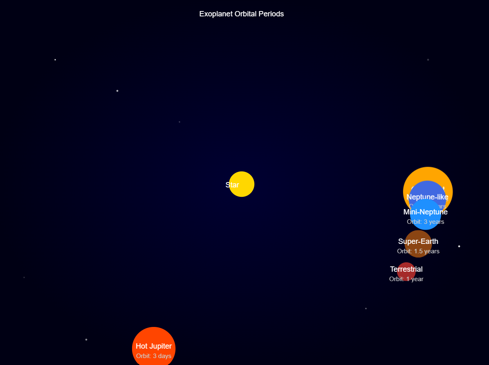
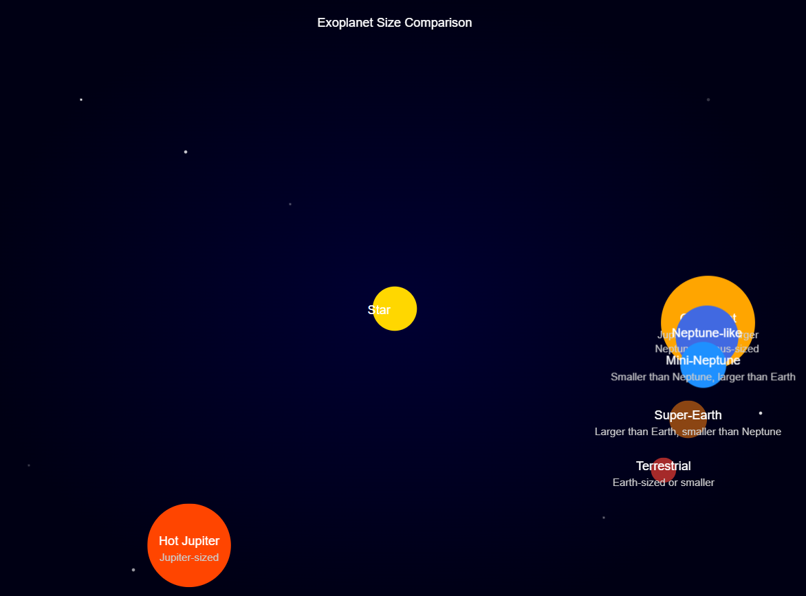
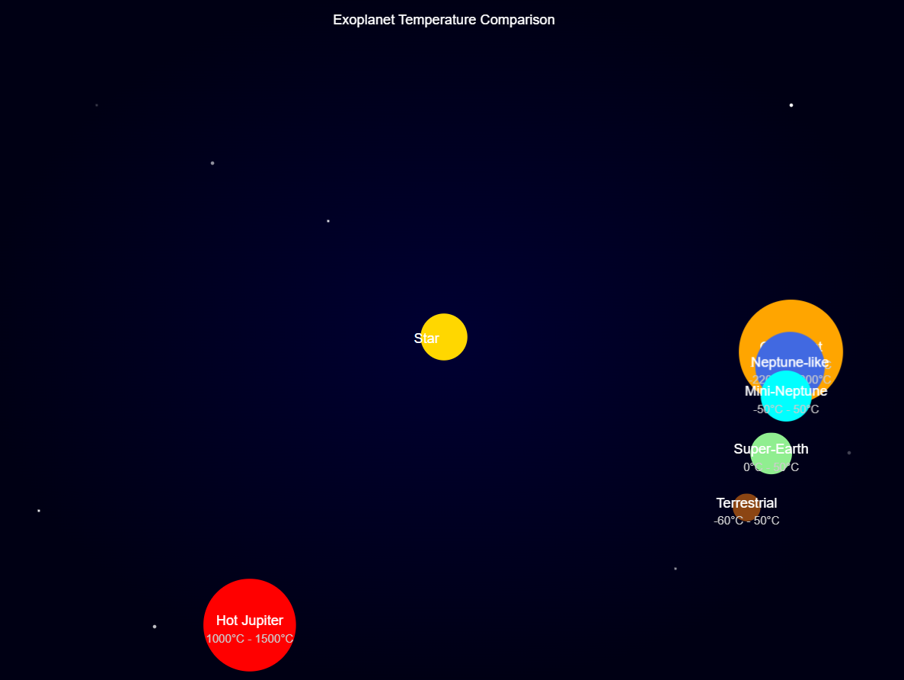
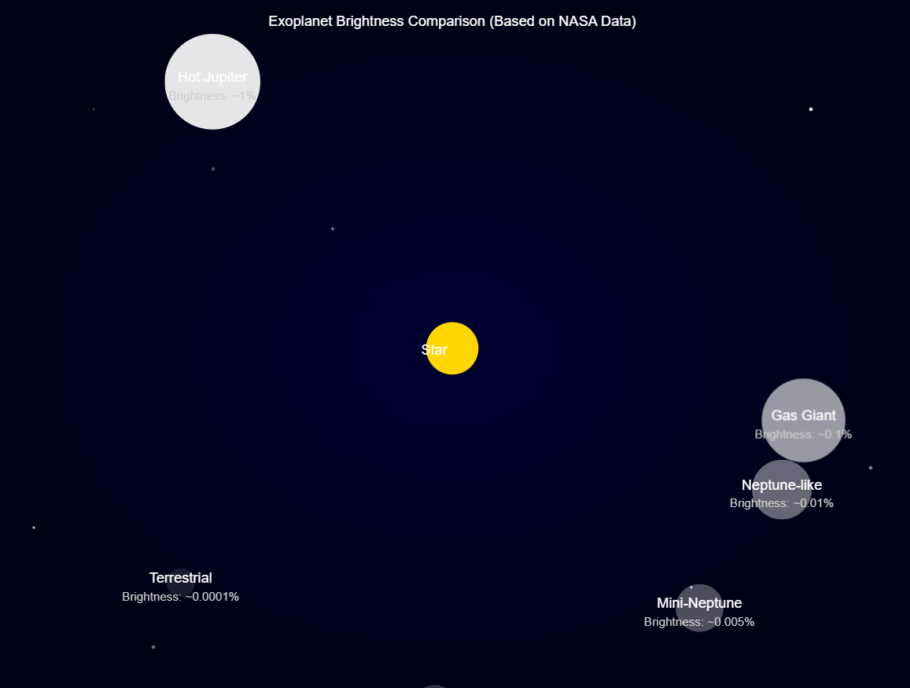
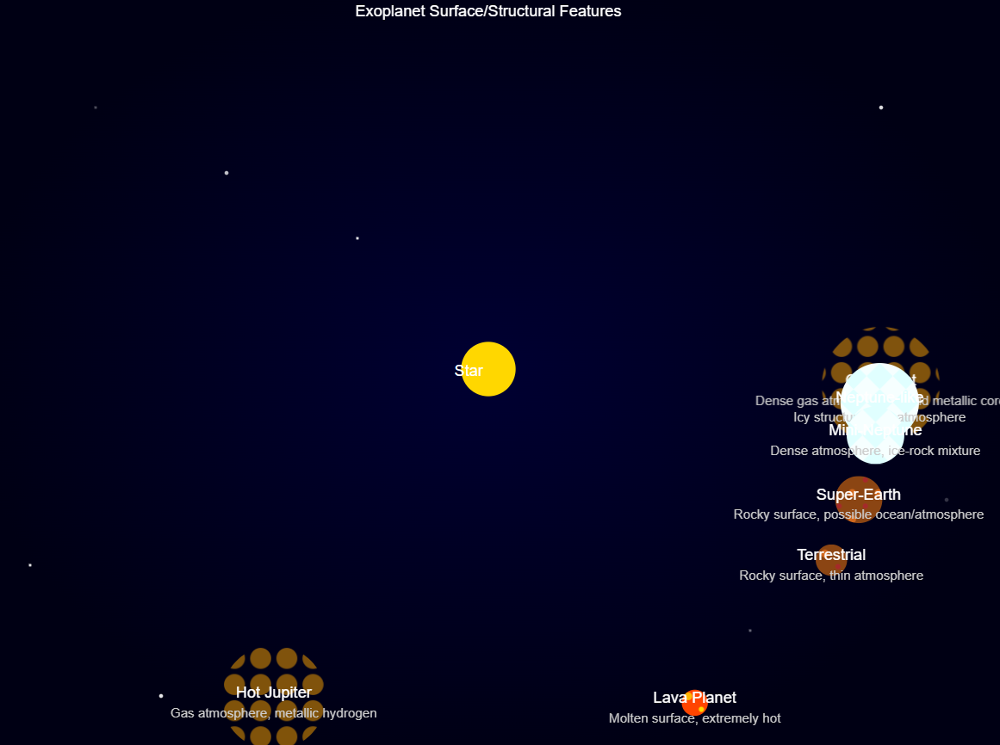
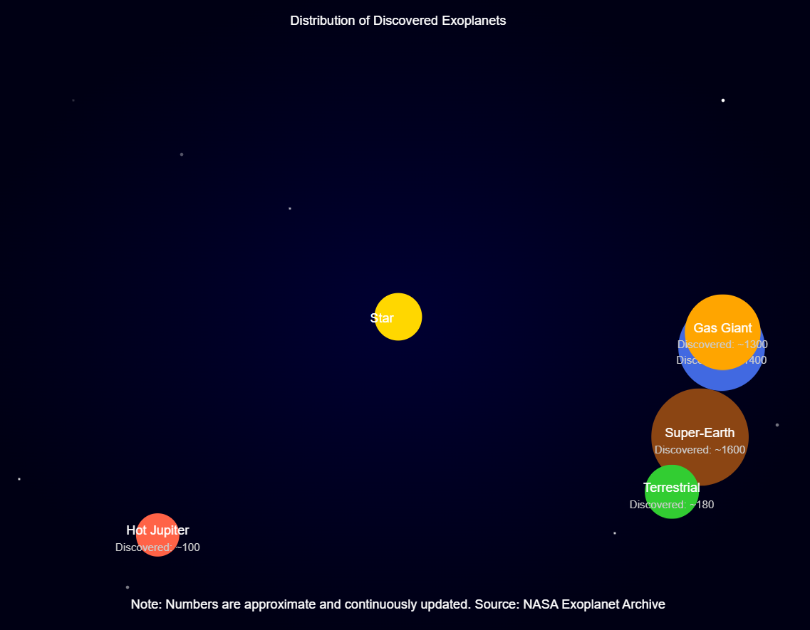

Discover the Wonders of Exoplanets
Explore eight key features of worlds beyond our solar system
Exoplanets Orbital Periods Animation
Visualize the varying orbital periods of exoplanets around their host stars.
Exoplanets Size Comparison Animation
Compare the sizes of various exoplanets in an animated format.
Exoplanets Temperature Comparison Animation
Explore the temperature ranges of different exoplanets through animation.
Exoplanets Brightness Comparison Animation (Based on NASA Data)
Compare the brightness of various exoplanets based on NASA's data in an animated format.
Exoplanets Surface/Structural Features Animation
Watch an animation detailing the surface and structural features of exoplanets.
Distribution of Discovered Exoplanets Animation
See an animated visualization of how discovered exoplanets are distributed across the galaxy.